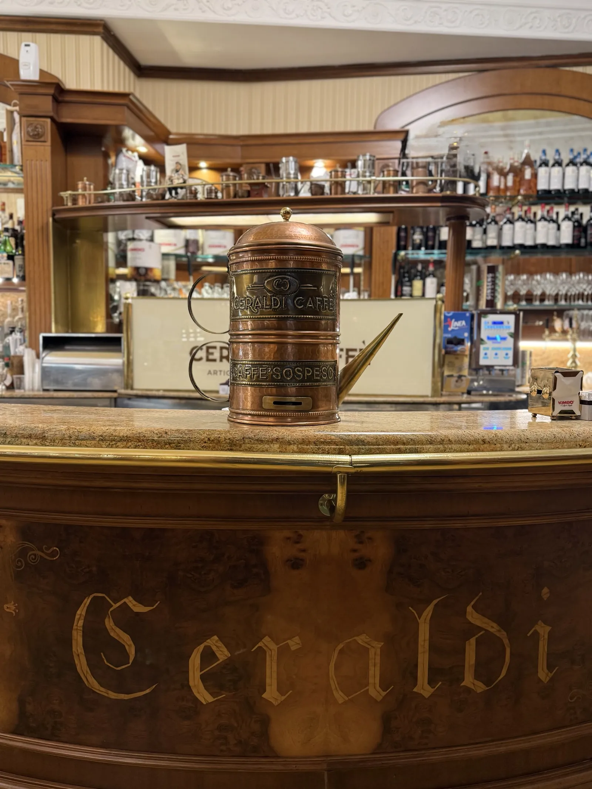

Il caffè sospeso a Napoli: cos'è, come funziona e da dove nasce
Si paga un caffè in più, per chi entrerà dopo e non potrà permetterselo. Da Ceraldi, in Piazza Carità, il caffè sospeso ha una casa: una caffettiera di rame sul bancone.

Il caffè sospeso è semplice: chi entra al bar paga due caffè e ne beve uno. L'altro resta "in sospeso", pagato e in attesa di qualcuno che entrerà più tardi e non potrebbe permetterselo. Nessuno sa chi l'ha offerto, nessuno deve ringraziare.
Cos'è il caffè sospeso
Il caffè sospeso è un caffè pagato in anticipo da un cliente del bar per una persona sconosciuta che verrà dopo. È un'usanza nata nei bar di Napoli e diventata un simbolo della solidarietà napoletana: un gesto anonimo, piccolo e quotidiano. Avvenire lo ha descritto come un gesto di attenzione verso uno sconosciuto, e non come un'elemosina.
Come funziona da Ceraldi: la caffettiera di rame
Al nostro bancone, in Piazza Carità 14, il caffè sospeso ha un posto tutto suo: una grande caffettiera di rame con due scritte, «Ceraldi Caffè» e «Caffè sospeso». Funziona così:
- Per lasciare un caffè sospeso paghi un caffè in più e metti lo scontrino nella caffettiera.
- Per ricevere un caffè sospeso chi ne ha bisogno prende uno scontrino dalla caffettiera e al bancone riceve un caffè già pagato, da una persona che non conoscerà.
Lo scontrino rende il gesto semplice e trasparente: ogni sospeso nella caffettiera è un caffè davvero pagato, e chi lo prende non deve chiedere niente a nessuno. Puoi lasciarne uno anche se sei a Napoli solo per qualche giorno: è uno dei modi più napoletani di passare da un bar.
Da dove nasce
Le origini precise non sono documentate e i racconti sono diversi. Si dice spesso che l'usanza si sia diffusa negli anni più poveri della città, quando molti non potevano permettersi nemmeno un caffè, ma nessuna fonte la data con certezza. Lo scrittore Riccardo Pazzaglia, nel libro Odore di caffè (2004), ne dava una spiegazione più leggera: al momento di pagare, tra amici al bancone, capitava di saldare un caffè in più, e invece di reclamarlo lo si lasciava a uno sconosciuto.
A renderlo famoso fuori da Napoli è stato Luciano De Crescenzo, che nel 2008 ha raccolto aneddoti e riflessioni sul tema nel libro Il caffè sospeso: per lui era il gesto di chi è contento e vuole, in qualche modo, offrire un caffè al resto del mondo.
Il 10 dicembre, giornata del caffè sospeso
Nell'autunno del 2010 alcuni festival culturali italiani hanno dato vita alla Rete del caffè sospeso, da un'idea di Maurizio Del Bufalo, ideatore del Festival del cinema dei diritti umani di Napoli. La Rete ha scelto il 10 dicembre, Giornata internazionale dei diritti umani, come giornata del caffè sospeso, con l'appoggio del sindaco di Napoli, e ha invitato i bar di tutta Italia a riprendere l'usanza.
Ogni anno, il 10 dicembre, è il giorno ideale per lasciare un sospeso. Ma la caffettiera sul nostro bancone c'è tutto l'anno.
Dal bar napoletano al resto del mondo
Negli anni l'idea ha viaggiato lontano. Il caffè sospeso è stato ripreso in altre città italiane e in diversi paesi, dall'Europa alle Americhe: in inglese si chiama suspended coffee, nei paesi di lingua spagnola café pendiente. In Argentina lo stesso principio è stato applicato anche alle empanadas.
Proprio mentre il mondo lo scopriva, a Napoli c'era chi lo dava per scomparso. Per questo conta che resti visibile, al bancone, dove tutti possono vederlo e capire come funziona.
Perché resiste
Il caffè sospeso funziona perché è piccolo: costa poco, non chiede organizzazione e non mette in imbarazzo nessuno. È lo stesso spirito del bar napoletano, dove il caffè è prima di tutto un'occasione per stare in mezzo agli altri. Se vuoi capire meglio questo rito, leggi anche come si beve il caffè a Napoli, le altre tradizioni napoletane e la storia di Piazza Carità e via Toledo, dove ci trovi.
Domande frequenti
Cos'è il caffè sospeso?
È un caffè pagato in anticipo da un cliente del bar per una persona che verrà dopo e che non potrebbe permetterselo. È un'usanza nata nei bar di Napoli: chi lo offre resta anonimo e chi lo riceve non deve ringraziare nessuno.
Come si lascia un caffè sospeso da Ceraldi?
Si paga un caffè in più e si mette lo scontrino nella grande caffettiera di rame con la scritta «Caffè sospeso», sul bancone di Ceraldi Caffè in Piazza Carità 14, a Napoli.
Come si riceve un caffè sospeso?
Chi ne ha bisogno prende uno scontrino dalla caffettiera e al bancone riceve un caffè già pagato da qualcun altro.
Quando è la giornata del caffè sospeso?
Il 10 dicembre, insieme alla Giornata internazionale dei diritti umani. L'ha scelta la Rete del caffè sospeso, nata nel 2010 da un'idea di Maurizio Del Bufalo.
Come si dice caffè sospeso in inglese?
In inglese si dice «suspended coffee»; nei paesi di lingua spagnola «café pendiente».